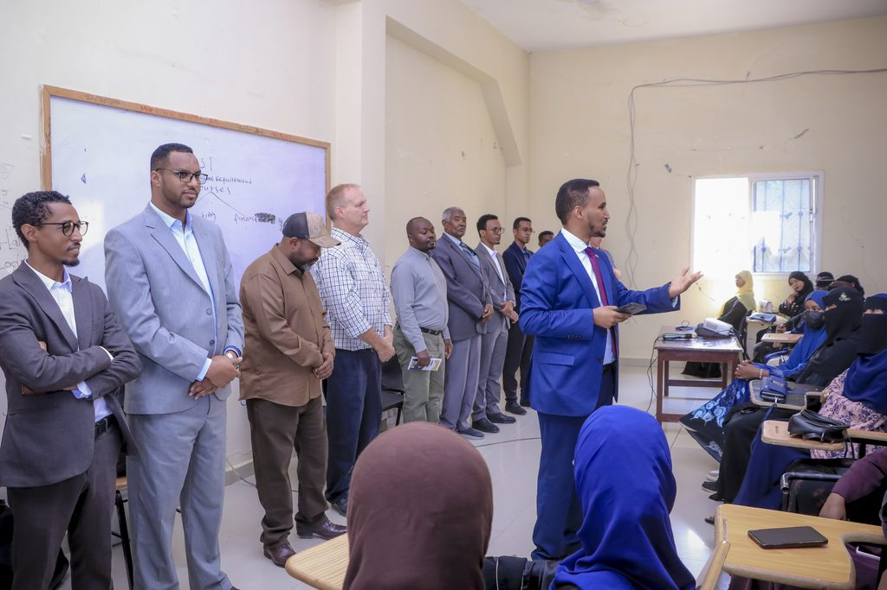

UNIVERSITY OF HARGEISA
Knowledge · Leadership · Service

The University of Hargeisa was conceived and established in 1998 through the collective vision of community elders, scholars, and government leadership to restore comprehensive university education.
Teaching operations commenced in September 2000 with an initial intake of students across two founding faculties: Law and Business Administration. Over the subsequent two decades, the university expanded methodically to address critical societal needs for medical practitioners, engineers, agricultural scientists, educators, and public administrators.
Today, the institution accommodates more than 15,000 enrolled students across seven constituent colleges and the School of Graduate Studies, operating from four dedicated campuses in the capital city of Hargeisa.
Guiding our academic programmes, scientific research, and civic engagement toward enduring national impact.
To be a world-class university recognised for producing competent, ethical, and innovative graduates who contribute meaningfully to the socio-economic advancement of Somaliland, the Horn of Africa, and the broader international community.
To provide accessible, high-quality higher education, multidisciplinary research, and community service that meets international standards, stimulates independent critical thinking, and nurtures ethical leadership.
Upholding unyielding standards of honesty, academic fairness, and transparency in teaching, research, and institutional administration.
Pursuing high pedagogical standards, evidence-based inquiry, and continuous curriculum modernization aligned with global benchmarks.
Directing scholarly expertise toward civic problem-solving, legal aid clinics, public health outreach, and rural economic resilience.


Structured governance ensuring academic integrity, strategic development, and institutional accountability.
The University Senate functions as the supreme academic authority of the University of Hargeisa. Under the university charter, the Senate holds statutory responsibility for regulating and superintending all academic work, examination procedures, and degree qualifications.
Senate decisions are deliberated by elected faculty delegates, collegiate deans, and academic directors to guarantee impartial oversight of educational standards.
The daily operation and strategic initiatives of the university are led by executive officers working in concert with collegiate deans and administrative directorates:
| Office | Principal Responsibility |
|---|---|
| Office of the President | Executive institutional leadership, strategic external relations, and board governance |
| Vice President for Academic Affairs | Undergraduate programmes, academic staff oversight, and admissions directorate |
| Vice President for Administration and Finance | Human resources, physical infrastructure, budgeting, and campus services |
| Directorate of Research and Postgraduate Studies | Institutional grants, ethical review board, and graduate school programmes |
Four dedicated campuses providing specialized lecture halls, laboratories, libraries, and clinical settings.

The historical headquarters houses central administrative offices, the central university library, auditoriums, and the colleges of Law, Business, Education, and Engineering. Includes computing centres and legal moot court facilities.

Dedicated entirely to the College of Medicine and Health Sciences. Contains modern histology and biochemistry laboratories, simulation training rooms, and specialized classrooms affiliated with regional teaching hospitals.

Equipped with experimental field plots, plant pathology research units, and veterinary diagnostic facilities dedicated to livestock health, crop resilience, and soil analysis.

Constructed specifically for master's and doctoral cohorts, featuring postgraduate seminar suites, high-speed digital research terminals, dedicated quiet study zones, and meeting suites for doctoral dissertation defenses.
